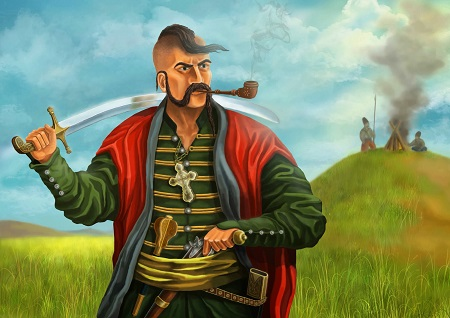

Україна: Земля Козацьких Легенд та Героїчних Подвигів
Україна, країна козацької духовності та героїчних вчинків, прославлена не лише своєю природною красою, але й багатошаровитою історією, насиченою подіями з часів козацтва. Козацтво відіграє важливу роль у формуванні національної ідентичності та патріотизму українського народу.
Героїчні Подвиги Козаків
Козацькі відлуння відбилися в історичних битвах, де козаки виступали за свободу та незалежність своєї землі. Багато з них відомі своїми героїчними подвигами, такими як Богдан Хмельницький, який очолив повстання проти польської шляхти та започаткував Козацьку державу, або Іван Сірко, відомий своїми військовими стратегіями та вдалими походами проти турецьких та татарських загарбників.
Козацька Культура та Традиції
Козацька культура сповнена мужності, відваги та віри в справедливість. Вона відображалася у їхніх звичаях, одязі та музиці. Козацька музика та пісні донині вражають своєю мелодійністю та патріотизмом.
Цікаві Факти про Козацтво
-
Славетна Хортиця: Острів Хортиця на річці Дніпро є колискою козацтва та місцем, де знаходилися козацькі села та фортеці. Саме тут знаходився Запорозький Січовий військовий табір.
-
Запорозька Січ: Центральним місцем об'єднання козацьких отаманів була Запорозька Січ, де відбувалися ради, вирішувалися важливі справи та плекалася козацька культура.
Завершення
Козацтво - невід'ємна частина історії та культури України, що додає патріотизму та гордості українцям. Його славні подвиги та непереможний дух залишили невиразний слід у віках, надихаючи майбутні покоління на віру у свою силу та незламність.